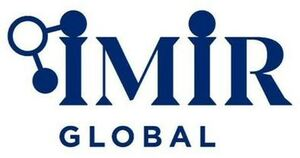

Trade Mark Journal No.2025/038 19 September 2025
WO0000001874258 (35)
Office of origin: Turkey
Date of International Registration:21 March 2025
Date of designation in the UK:
21 March 2025

"imir global" inscription is navy blue. There are three interconnected circles on the first letter of the phrase "imir" in the trademark. One of the circles is placed as the dot of the first letter of the phrase, "i". While the two circles are navy blue, the inside of the middle circle is white.
The mark contains the colours navy blue.
"imir global" inscription is navy blue.
- Class 35
- Advertising, marketing and public relations; organization of exhibitions and trade fairs for commercial or advertising purposes; development of advertising concepts; provision of an online marketplace for buyers and sellers of goods and services; the bringing together, for the benefit of others, of a variety of goods, namely, dietary supplements for pharmaceutical and veterinary purposes, dietary supplements, nutritional supplements, medical preparations for slimming purposes, food for babies, herbs and herbal beverages adapted for medicinal purposes, dental preparations and articles, namely, teeth filling material, dental impression material, dental adhesives and material for repairing teeth, sanitary preparations for medical use, namely, hygienic pads, hygienic tampons, plasters, materials for dressings, diapers made of paper and textiles for babies, adults and pets, deodorants, other than for human beings or for animals, air purifying preparations, air deodorising preparations, disinfectants, antiseptics, detergents for medical purposes, medicated soaps, disinfectant soaps, antibacterial hand lotions, babies' bottles, babies' pacifiers, teats, gum massagers for babies, bicycles and their bodies, handlebars and mudguards for bicycles, vehicle seats, head-rests for vehicle seats, safety seats for children, for vehicles, seat covers for vehicles, vehicle covers (shaped), sun-blinds adapted for vehicles, luggage carriers for vehicles, bicycle and ski carriers for cars, saddles for bicycles or motorcycles, safety belts for vehicle seats, air bags (safety devices for automobiles), baby carriages, wheelchairs, pushchairs, jewellery, imitation jewellery, gold, precious stones and jewellery made thereof, cufflinks, tie pins, statuettes and figurines of precious metal, clocks, watches and chronometrical instruments, chronometers and their parts, watch straps, paper and cardboard, paper and cardboard for packaging and wrapping purposes, cardboard boxes, paper towels, toilet paper, paper napkins, printed publications, printed matter, books, magazines, newspapers, bill books, printed dispatch notes, printed vouchers, calendars, posters, photographs [printed], paintings, stickers [stationery], postage stamps, stationery, office stationery, instructional and teaching material [except furniture and apparatus], writing and drawing implements, artists' materials, paper products for stationery purposes, adhesives for stationery purposes, pens, pencils, erasers, adhesive tapes for stationery purposes, cardboard cartons [artists' materials], writing paper, copying paper, paper rolls for cash registers, drawing materials, chalkboards, painting pencils, watercolors [paintings], unworked or semi-worked leather and animal skins, imitations of leather, stout leather, leather used for linings, goods made of leather, imitations of leather or other materials, designed for carrying items, bags, wallets, boxes and trunks made of leather or stout leather, keycases, trunks [luggage], suitcases, umbrellas, parasols, sun umbrellas, walking sticks, whips, harness, saddlery, stirrups, straps of leather (saddlery), furniture, made of any kind of material, mattresses, pillows, air mattresses and cushions, not for medical purposes, water beds, bouncing chairs for babies, playpens for babies, cradles, infant walkers, display boards, frames for pictures and paintings, identity plates, identification bracelets, name plates, identification tags, made of wood or synthetic materials, small hardware goods of wood or synthetic materials, furniture fittings, of wood or synthetic materials, opening and closing mechanisms of wood or synthetic materials, bamboo curtains, roller indoor blinds [for interiors], slatted indoor blinds, vertical indoor blinds, bead curtains for decoration, curtain hooks, curtain rings, curtain tie-backs, curtain rods, hand-operated non-electric cleaning instruments and appliances, namely, brushes, except paintbrushes, steel chips for cleaning, sponges for cleaning, steel wool for cleaning, cloths of textile for cleaning, gloves for dishwashing, non-electric polishing machines for household purposes, brooms for carpets, mops, toothbrushes, electric toothbrushes, dental floss, shaving brushes, hair brushes, combs, non-electric household or kitchen utensils, [other than forks, knives, spoons], services [dishes], pots and pans, bottle openers, flower pots, drinking straws, non-electric cooking utensils, ropes, strings, rope ladders, hammocks, fishing nets, tents, awnings, tarpaulins, sails, vehicle covers, not fitted, bags of textile, for packaging, padding and stuffing materials, except of rubber and plastics, including those of wool and cotton, synthetic fibers for textile use, raw spun fiber, glass fibers for textile use, woven or non-woven textile fabrics, textile goods for household use, namely, curtains, bed covers, sheets (textile), pillowcases, blankets, quilts, towels, flags, pennants, labels of textile, swaddling blankets, sleeping bags for camping, clothing, including underwear and outerclothing, other than special purpose protective clothing, socks, mufflers [clothing], shawls, bandanas, scarves, belts [clothing], footwear, shoes, slippers, sandals, headgear, hats, caps with visors, berets, caps [headwear], skull caps, laces and embroidery, guipure lace, festoons, ribbons (haberdashery), ribbons and braid, reinforcing tapes for clothing, cords for clothing, letters and numerals for marking linen, embroidered emblems, badges for wear, not of precious metal, shoulder pads for clothing, buttons for clothing, fastenings for clothing, eyelets for clothing, zippers, buckles for shoes and belts, rivet buttons, adhesive tapes [haberdashery], fasteners, pins, other than jewellery, needles, sewing needles, needles for sewing machines, lacing needles, needles for knitting and embroidery, boxes for needles, needle cushions, artificial flowers, artificial fruits, hair pins, hair buckles, hair bands, decorative articles for the hair, not made of precious metal, wigs, hair extensions, electric or non-electric hair curlers, other than hand implements, carpets, rugs, mats, gymnasium mats, wallpaper, wall hangings not of textile, games and toys, toys for animals, toys for outdoor playgrounds, parks and game parks, gymnastic and sporting articles, fishing tackle, artificial fishing bait, decoys for hunting and fishing, enabling customers to conveniently view and purchase those goods, such services may be provided by retail stores, wholesale outlets, by means of electronic media or through mail order catalogues.
İMİR GLOBAL DIŞ TİCARET YÖNETİM ANONİM ŞİRKETİ
Representative: ERDEM KAYA PATENT VE DAN. A.Ş., KONAK MAH. KUDRET SOK., ELİTPARK PARK SİT. OFİSLER, APT. 12/27 Kat:5, NİLÜFER/BURSA, TURKEY